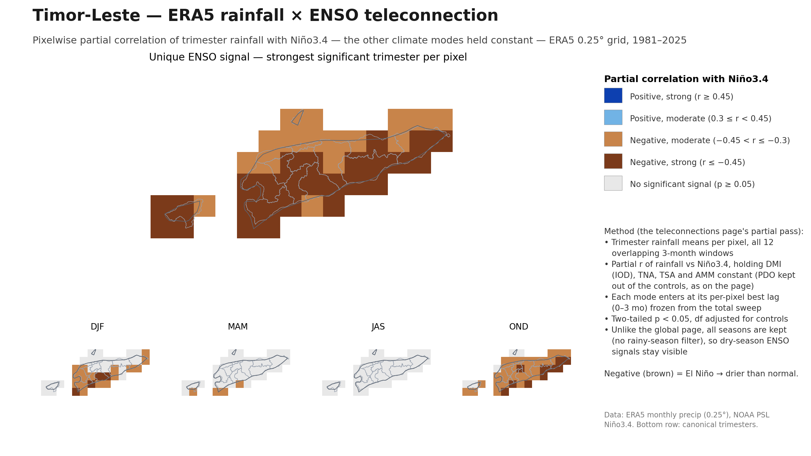
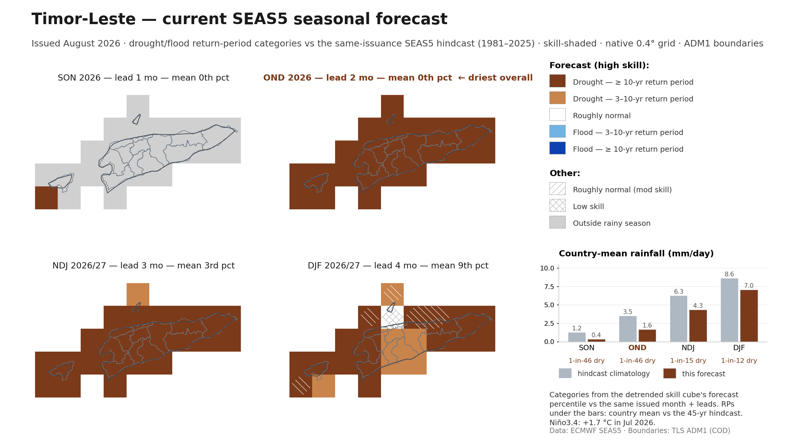

Two slides: ENSO's unique historical rainfall signal over Timor-Leste
(pixelwise partial correlation, other climate modes held constant), and what the
current SEAS5 issuance forecasts for the coming trimesters — a severely dry
wet-season onset in late 2026 under a strong developing El Niño.

Slide 1. ERA5 rainfall × ENSO, pixelwise at the native
0.25° grid, 1981–2025 — the ds-teleconnections partial-correlation pass zoomed to
Timor-Leste: Niño3.4's unique signal, holding IOD (DMI), TNA, TSA and AMM constant.
Brown = El Niño drier; the signal is negative nationwide and peaks around the
OND wet-season onset.

Slide 2. The current SEAS5 issuance (August 2026),
pixelwise over ADM1, one tile per fully-forecast trimester, in the alerts app's
own colours: drought/flood 3-yr and 10-yr return-period categories from the
detrended skill cube, skill-shaded (solid = high skill, white hatch = moderate,
cross-hatch = low). The bar chart carries the overall return period of the country-mean
rainfall per trimester. OND 2026 is the driest outlook (mean 0th percentile,
1.6 vs a normal 3.5 mm/day; ≥10-yr RP drought at high skill nationwide) —
a delayed wet-season onset, consistent with slide 1's teleconnection under the
current El Niño.
Generated by analysis/png_enso_slides.py --country tls.
Data: ERA5 monthly precipitation (0.25°), NOAA PSL climate indices, ECMWF SEAS5
ensemble-mean monthly precipitation (0.4°), TLS ADM1 CODs. Rerun the script and
commit to refresh.